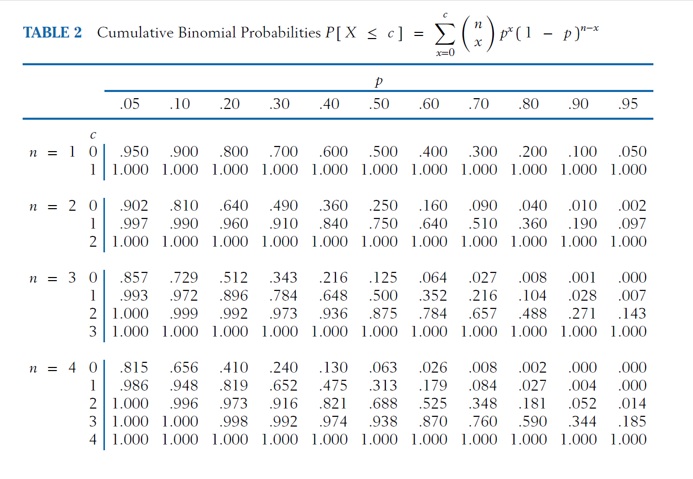
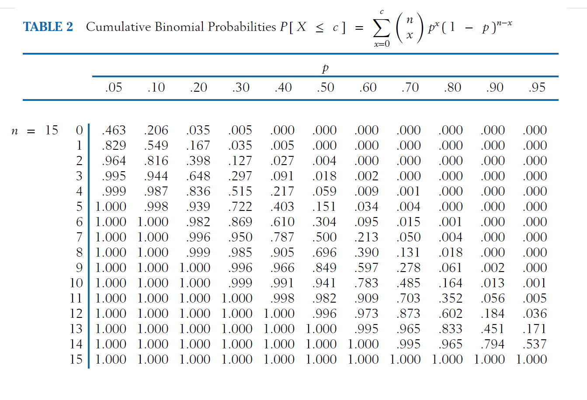

Capítulo 3 Ejemplos
3.1 Germinación de semillas
Suponga un experimento en el que se evalúan 4 semillas de un lote para verificar si germinan. Cada semilla puede:
Éxito (E): Germina con probabilidad \(p\)
Fracaso (F): No germina con probabilidad \(1-p\)
3.1.1 Espacio Muestral
Con 4 ensayos, tenemos \(2^4 = 16\) posibles resultados.
| Número | Evento | Secuencia | Probabilidad del Evento | \(X\) (N° Éxitos) |
|---|---|---|---|---|
| 1 | \(\omega_1\) | E E E E | \(p^4\) | 4 |
| 2 | \(\omega_2\) | E E E F | \(p^3(1-p)\) | 3 |
| 3 | \(\omega_3\) | E E F E | \(p^3(1-p)\) | 3 |
| 4 | \(\omega_4\) | E F E E | \(p^3(1-p)\) | 3 |
| 5 | \(\omega_5\) | F E E E | \(p^3(1-p)\) | 3 |
| 6 | \(\omega_6\) | E E F F | \(p^2(1-p)^2\) | 2 |
| 7 | \(\omega_7\) | E F E F | \(p^2(1-p)^2\) | 2 |
| 8 | \(\omega_8\) | E F F E | \(p^2(1-p)^2\) | 2 |
| 9 | \(\omega_9\) | F E E F | \(p^2(1-p)^2\) | 2 |
| 10 | \(\omega_{10}\) | F E F E | \(p^2(1-p)^2\) | 2 |
| 11 | \(\omega_{11}\) | F F E E | \(p^2(1-p)^2\) | 2 |
| 12 | \(\omega_{12}\) | E F F F | \(p(1-p)^3\) | 1 |
| 13 | \(\omega_{13}\) | F E F F | \(p(1-p)^3\) | 1 |
| 14 | \(\omega_{14}\) | F F E F | \(p(1-p)^3\) | 1 |
| 15 | \(\omega_{15}\) | F F F E | \(p(1-p)^3\) | 1 |
| 16 | \(\omega_{16}\) | F F F F | \((1-p)^4\) | 0 |
Note: eventos diferentes tienen la misma probabilidad si contienen el mismo número de éxitos y fracasos.
3.1.2 Agrupando los eventos por el número de Éxitos
Ahora agrupamos los eventos según el valor de \(X\):
| \(x\) (N° Éxitos) | Eventos Favorables | Cantidad de Eventos | Probabilidad \(P(X=x)\) |
|---|---|---|---|
| 0 | FFFF | 1 | $1 p^0 (1-p)^4 $ |
| 1 | EFFF, FEFF, FFEF, FFFE | 4 | \(4\times p^1(1-p)^3\) |
| 2 | EEFF, EFEF, EFFE, FEEF, FEFE, FFEE | 6 | \(6\times p^2(1-p)^2\) |
| 3 | EEEF, EEFE, EFEE, FEEE | 4 | \(4\times p^3(1-p)^1\) |
| 4 | EEEE | 1 | \(1\times p^4(1-p)^0\) |
¿Es una función de Masa de probabilidad? La suma de probabilidades debe ser 1: \[\sum_{x=0}^{4} P(X=x) = (1-p)^4 + 4p(1-p)^3 + 6p^2(1-p)^2 + 4p^3(1-p) + p^4 = 1\]
En nuestro ejemplo con \(n=4\), el \(\text{Soporte}(X) = \{0, 1, 2, 3, 4\}\)
3.1.3 Parámetros del modelo Binomial
Media (Valor Esperado): \(E[X] = np\)
Varianza: \(Var(X) = np(1-p)\)
Desviación Estándar: \(\sigma = \sqrt{np(1-p)}\)
3.1.4 Ejemplo
Un ingeniero agrónomo sabe que el 70% de las semillas de maíz de cierto lote germinan correctamente. Selecciona 4 semillas al azar. ¿Cuál es la probabilidad de que exactamente 3 germinen?
3.1.4.1 Pasos
Paso 1: Identificar parámetros
\(n = 4\) (semillas evaluadas)
\(p = 0.70\) (probabilidad de germinación)
\(1-p = 0.30\) (probabilidad de no germinar)
Paso 2: Calcular el coeficiente binomial
\[\binom{4}{3} = \frac{4!}{3!(4-3)!} = \frac{4!}{3!1!} = \frac{24}{6 \cdot 1} = 4\]
Paso 3: Estimación de probabilidades \[P(X = 3) = \binom{4}{3}(0.70)^3(0.30)^{4-3}\] \[P(X = 3) = 4 \cdot (0.70)^3 \cdot (0.30)^1\] \[P(X = 3) = 4 \cdot 0.343 \cdot 0.30\] \[P(X = 3) = 4 \cdot 0.1029\] \[P(X = 3) = 0.4116\]
Paso 4: Interpretación Existe un 41.16% de probabilidad de que exactamente 3 de las 4 semillas germinen.
3.1.5 Tabla de Probabilidades
| \(x\) | Cálculo | \(P(X=x)\) |
|---|---|---|
| 0 | \(\binom{4}{0}(0.7)^0(0.3)^4 = 1 \cdot 1 \cdot 0.0081\) | 0.0081 |
| 1 | \(\binom{4}{1}(0.7)^1(0.3)^3 = 4 \cdot 0.7 \cdot 0.027\) | 0.0756 |
| 2 | \(\binom{4}{2}(0.7)^2(0.3)^2 = 6 \cdot 0.49 \cdot 0.09\) | 0.2646 |
| 3 | \(\binom{4}{3}(0.7)^3(0.3)^1 = 4 \cdot 0.343 \cdot 0.3\) | 0.4116 |
| 4 | \(\binom{4}{4}(0.7)^4(0.3)^0 = 1 \cdot 0.2401 \cdot 1\) | 0.2401 |
Verificación: \(0.0081 + 0.0756 + 0.2646 + 0.4116 + 0.2401 = 1.0000\) ✓

3.1.6 Control de Calidad en Semillas
Problema: Un productor de trigo necesita que al menos el 85% de sus semillas germinen para considerar el lote como “comercializable”. Si toma una muestra de 10 semillas y la tasa real de germinación es del 90%, ¿cuál es la probabilidad de que el lote sea rechazado injustamente (es decir, que 8 o menos germinen)?
Solución:
Paso 1: Identificar parámetros del modelo
\(n = 10\)
\(p = 0.90\)
Estimamos \(P(X \leq 8)\) donde \(X\) es el número de semillas que germinan al poner a germinar \(n=4\).
Paso 2: Re escribimos la pregunta en formato estadístico \[P(X \leq 8) = P(X=0) + P(X=1) + \cdots + P(X=8)\]
O más fácilmente: \[P(X \leq 8) = 1 - P(X \geq 9) = 1 - [P(X=9) + P(X=10)]\]
Paso 3: Calcular \[P(X=9) = \binom{10}{9}(0.90)^9(0.10)^1 = 10 \cdot 0.3874 \cdot 0.10 = 0.3874\] \[P(X=10) = \binom{10}{10}(0.90)^{10}(0.10)^0 = 1 \cdot 0.3487 \cdot 1 = 0.3487\]
Paso 4: Resultado \[P(X \leq 8) = 1 - (0.3874 + 0.3487) = 1 - 0.7361 = 0.2639\]
Con esto: Existe un 26.39% de probabilidad de rechazar injustamente un buen lote. Esto sugiere que el criterio de “al menos 85%” con muestra de 10 puede ser demasiado estricto.
3.1.7 Eficacia de un Fungicida
Problema: Un nuevo fungicida se aplica a 15 plantas infectadas. Se sabe que sin tratamiento, la probabilidad de recuperación espontánea es del 20%. Si el fungicida no tuviera efecto, ¿cuál sería la probabilidad de observar 10 o más recuperaciones por azar?
Solución:
Paso 1: Hipótesis nula Asumimos que el fungicida NO tiene efecto: \(p = 0.20\)
Paso 2: Parámetros
\(n = 15\)
\(p = 0.20\)
Buscamos \(P(X \geq 10)\)
Paso 3: Calcular \[P(X \geq 10) = P(X=10) + P(X=11) + P(X=12) + P(X=13) + P(X=14) + P(X=15)\]
Calculamos cada término: \[P(X=10) = \binom{15}{10}(0.20)^{10}(0.80)^5 = 3003 \cdot 1.024 \times 10^{-7} \cdot 0.3277 \approx 0.0001\]
Los términos siguientes son aún más pequeños (cercanos a cero).
Paso 4: Resultado \[P(X \geq 10) \approx 0.0001\]
Interpretación: La probabilidad de observar 10 o más recuperaciones por puro azar es de 0.01%. Esto es extremadamente bajo, lo que proporciona evidencia estadística fuerte de que el fungicida sí tiene efecto.
Si \(x \sim Bin(x, n, p)\), entonces su distribución es simétrica respecto a la distribución de la v.a. $ Y Bin(x; n; q) $ Y, con esto, \[P(X=x)=P(Y=n-x)\] Esto confirma que al definir la v.a. no es importante la definición de un evento como éxito o fracaso

3.1.8 Planificación de Siembra
Problema: Un agricultor necesita 100 plantas de tomate para cumplir un pedido. Sabe que la tasa de supervivencia de las plántulas es del 80%. ¿Cuántas plántulas debe sembrar para tener al menos un 95% de probabilidad de obtener 100 o más plantas supervivientes?
Solución:
Paso 1: Enfoque Este es un problema inverso. Necesitamos encontrar \(n\) tal que: \[P(X \geq 100) \geq 0.95\] donde \(X \sim B(n, 0.80)\)
Paso 2: Aproximación inicial Por el valor esperado: \(E[X] = np = 0.80n\) Si queremos 100 plantas: \(0.80n = 100 \Rightarrow n = 125\)
Pero esto solo nos da el promedio. Necesitamos un margen de seguridad.
Paso 3: Prueba con \(n = 130\) Calculamos \(P(X \geq 100)\) con \(n=130, p=0.80\)
3.1.9 Usando Aproximación a la Distribución Normal
Usando aproximación normal (justificada porque \(np = 104 > 5\) y \(n(1-p) = 26 > 5\)): - Media: \(\mu = np = 130 \cdot 0.80 = 104\) - Desviación: \(\sigma = \sqrt{np(1-p)} = \sqrt{130 \cdot 0.80 \cdot 0.20} = \sqrt{20.8} \approx 4.56\)
Estandarizamos con corrección por continuidad: \[Z = \frac{99.5 - 104}{4.56} = \frac{-4.5}{4.56} \approx -0.99\]
Buscamos en tabla Z: \[P(Z \geq -0.99) = 1 - P(Z < -0.99) = 1 - 0.1611 = 0.8389\]
Solo 83.89%, insuficiente.
Paso 4: Prueba con \(n = 135\)
\(\mu = 135 \cdot 0.80 = 108\)
\(\sigma = \sqrt{135 \cdot 0.80 \cdot 0.20} = \sqrt{21.6} \approx 4.65\)
\[Z = \frac{99.5 - 108}{4.65} = \frac{-8.5}{4.65} \approx -1.83\]
\[P(Z \geq -1.83) = 1 - 0.0336 = 0.9664\]
Resultado: Con \(n = 135\) plántulas, tenemos un 96.64% de probabilidad de obtener al menos 100 plantas.
Recomendación práctica: El agricultor debe sembrar 135 plántulas para cumplir su pedido con 95% de confianza.
3.1.10 Consideraciones Finales
3.1.10.1 Errores Comunes a Evitar
- Confundir \(p\) con \(1-p\): Siempre verifica qué es “éxito” en tu contexto.
- Olvidar el coeficiente binomial: No es solo \(p^k(1-p)^{n-k}\), falta multiplicar por \(\binom{n}{k}\).
- Aplicar cuando no hay independencia: Si los ensayos se influyen entre sí, la binomial no aplica.
- Usar con probabilidad variable: Si \(p\) cambia entre ensayos, necesitas otro modelo.